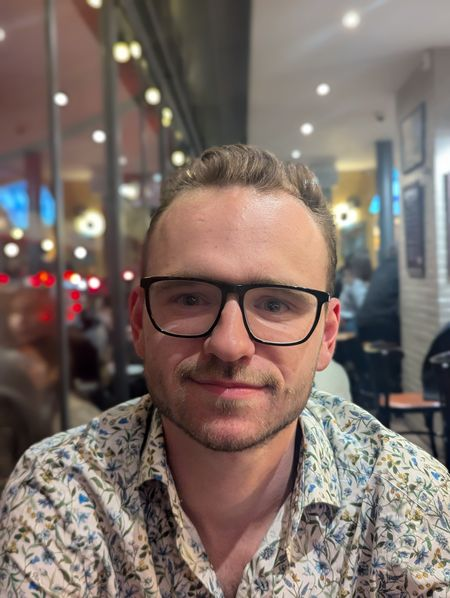

Quantitative Stability, Coercivity and Uniqueness of Optimal Transport Plans

William Ford
PhD student in mathematics — École Polytechnique (CMAP) & LMO Paris-Saclay
About
I am a second-year mathematics PhD student in Paris at École Polytechnique and Université Paris-Saclay, advised by Michael Goldman and Cyril Letrouit.
My PhD research is on quantitative stability of the optimal transport problem. I have written two preprints on this subject; see Research.
I am also actively working on mathematical aspects of AI safety and alignment, as well as autoformalisation of mathematics in Lean.
Contact: william.ford@polytechnique.edu. Offices: 2A1 at LMO and 2008 at CMAP.
You can find my CV HERE.
Education
PhD Mathematics — École Polytechnique / Université Paris-Saclay, France2025–2028
Research on quantitative stability of optimal transport. Supervisors: Dr Michael Goldman and Dr Cyril Letrouit.
Iliad Intensive — London Initiative for Safe AI, United KingdomNov. 2026
Four-week intensive course on AI alignment: interpretability, agent foundations, heuristics, singular learning theory and reinforcement learning.
M2 Optimisation — IP Paris PhD Track / Paris-Saclay, France2024–2025
Très Bien, 18.1/20. Stochastic optimisation, game theory, optimal transport, nonsmooth analysis and optimal control.
BSc and MSc Mathematics — Durham University, United Kingdom2020–2024
First Class, averages of 82% and 88%. Ranked 1st of 25 in MSc. Analysis, PDEs, probability, statistics and optimisation.
Academic visits
Iliad Intensive, London Initiative for Safe AI2–27 November 2026
Four-week programme on AI alignment in London.
Lyon, France28 September – 24 October 2026
Research visit with Filippo Santambrogio.
Talks
Quantitative Uniqueness of Kantorovich Potentials
Poster presentations
Affiliations
- Centre de Mathématiques Appliquées, École Polytechnique — shape optimisation team.
- Laboratoire de Mathématiques d'Orsay, Université Paris-Saclay — Inria ParMA team.
Responsibilities
- Co-organiser of the GdT OT-PDE-ML seminar (ParMA team, LMO Paris-Saclay).
Teaching and mentoring
Teaching Assistant — École Polytechnique2025–2026
Led problem classes for How to Write Mathematics I and Discrete Mathematics I.
Teaching Assistant — Durham University2023–2024
Led two weekly problem-solving tutorials and marked assignments across Calculus I and Linear Algebra I.
Mathematics Tutor — MyTutor.co.ukMarch–September 2021
Taught GCSE and A-level mathematics one-to-one and in small groups, with an emphasis on problem-solving and intuition.